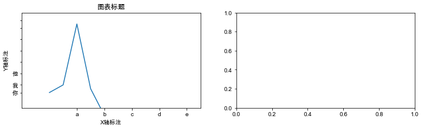

Matplotlib-图像组件
图像组件主要用于：精确调整图像各组成部分的样式
Matplotlib绘图底层流程：
- 先创建一个父对象fig
- 再在里面绘制若干子对象ax
ax子对象的组件内容
- Title 图表标题
- plt.title()
- Label 坐标轴标注
- plt.xlabel()
- plt.ylabel()
- Tick Label 刻度设置和刻度标注
- plt.xticks()
- plt.yticks()
- Axis 坐标范围
- plt.axis() # ，x轴，y轴
- plt.xlim() # x轴坐标范围
- plt.ylim() # y轴坐标范围
- plt.axis() # ，x轴，y轴
各组件关系为：
import matplotlib.pyplot as plt
plt.rcParams['font.family'] = ['Arial Unicode MS', 'Microsoft Yahei', 'SimHei', 'sans-serif']
# 绘图，并赋值给变量
n1, = plt.plot(
[0,2,4,6,8], # X轴坐标值
[1,5,3,9,7], # Y轴坐标值
label='number1图例标题1' # 图例
)
n2, = plt.plot([1,3,5,7,9],[0,4,2,8,6], label = 'number2图例标题2')
########################
# 图表标题
plt.title(
'hello图表标题',
color = '#00ff00',
fontsize = 24,
)
# 坐标轴标注
plt.xlabel('X axis')
plt.ylabel('Y轴标注')
# 刻度和刻度标注
# plt.yticks([1,3,6,9,12,15,18,20]) # 设置坐标刻度步长
# plt.xticks(
# [0,1,2,5,8,10], # 刻度设置
# ['2000','2001','2002','2005','2008','2010'], # 刻度标注
# fontsize = 14, # 文字大小
# rotation = 90, # 旋转角度
# )
# 坐标范围,会和上面代码影响
# plt.axis([-1,11,-2,12]) # X轴-1到11,Y轴-2到12
plt.xlim([-1, 11]) # x轴坐标范围：-1到11
plt.ylim([-2, 12]) # y轴坐标范围：-2到12
########################
# 图例：全部绘制（需在绘图方法内加label属性，见前代码）
# plt.legend() # loc 位置，frameon 有无边框
# 图例：指定数据绘制图例，绘图方法前需要赋值变量（绘图方法传给变量，变量名后带逗号）
# 图例位置可用参数：
# best 默认
# right
# center,center left,center right
# lower center,lower left,lower right
# upper center,upper left,upper right
plt.legend(
handles = [n1, n2], # 给指定数据绘制图例
loc = 'upper right', # 图例位置
frameon= False # 有无边框
)
# 网格
plt.grid(linewidth = 0.2)
# 存为图片文件，默认png，其他格式如jpg、svg、pdf等写上后缀即可
# 可带路径如`images/test.jpg`，需要先建立目录
plt.savefig('test')
# dpi（“每英寸点数”，分辨率），常用：72，300
# bbox_inches（可以剪除当前图表周围的空白部分）
# plt.savefig('test.png', dpi=300, bbox_inches='tight') # 带有最小白边且分辨率为300DPI的PNG图片
# 显示图像
plt.show()
面向对象的组件书写（了解）
一般简单绘图使用面向过程写法，复杂绘图使用面向对象写法
# 创建父对象，图像宽高可选
fig = plt.figure(figsize = (12, 3))
# 创建子对象，1行2列，选中第1个子图
ax = fig.add_subplot(121)
ax2 = fig.add_subplot(122)
# 子对象绘图
ax.plot([1,3,19,2,-5])
# 图表标题
ax.set_title('图表标题')
# 坐标轴标注
ax.set_xlabel('X轴标注')
ax.set_ylabel('Y轴标注')
# 刻度设置和刻度标注
ax.set_xticks([2,4,6,8,10]) #x 轴刻度设置
ax.set_yticks([1,3,6,9,12,15,18,20]) # y轴刻度设置
ax.set_xticklabels(['a','b','c','d','e']) # x轴刻度标注
ax.set_yticklabels(['你','我','他']) # y轴刻度标注
# 坐标范围
ax.axis([-2,11,-3,22]) # X轴-2到11,Y轴-3到22
plt.show()
